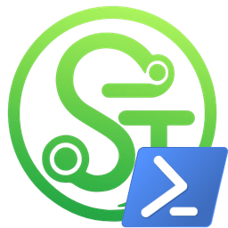

OST PowerShell
Version 0.0.0 — early planning phase. Nothing to download yet, but here's the idea.
OST PowerShell is a script idea designed to automate the installation, DLL injection setup, and configuration of OpenSteamTool (OST). No more manually copying DLLs to your Steam folder, hunting down x86/x64 hook files, or editing launch scripts — one script to handle it all.
error
IMPORTANT
OpenSteamTool acts as a client patcher/unlocker. Modifying client DLLs or bypass features may violate the Steam Subscriber Agreement. This automation project is strictly for software preservation, offline modding, and research purposes. Use at your own discretion.
What it'll do
- Check and prepare the Steam client directory
- Safely download and update the latest required hook DLLs
- Install and structure custom Lua scripts in the proper directories
- Manage active content unlocking and configuration files
- Provide a clean uninstall/rollback option to restore default Steam files
Planned Features
- Automatic updates for OpenSteamTool DLLs and script repositories
- Visual interactive prompt to toggle/configure specific Lua scripts
- Backup system for original Steam client files before injection